27 prawdziwych skoczni
Wielka Krokiew, Malinka, Bergisel, Letalnica i inne. Od K85 w Karpaczu do mamutów K200.
27 prawdziwych skoczni – od Karpacza po Planicę. Wybicie co do setnej sekundy, wiatr i pogoda, telemark, noty sędziów jak w telewizji i codzienny konkurs online.
Proste na start, trudne do opanowania. Każdy skok to inna odległość – liczy się refleks i wyczucie.
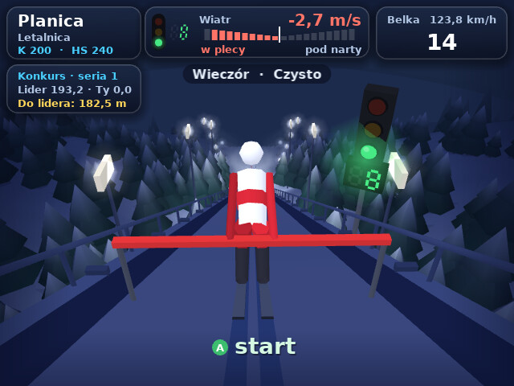
Siadasz na belce. Czerwone, żółte, zielone – zegar odlicza 10 sekund. Wciskasz A i jazda.
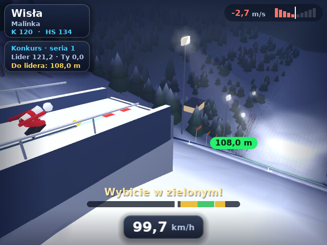
A tuż przed progiem. Gra liczy czas i powie, czy było za wcześnie. Bez wybicia nie polecisz.
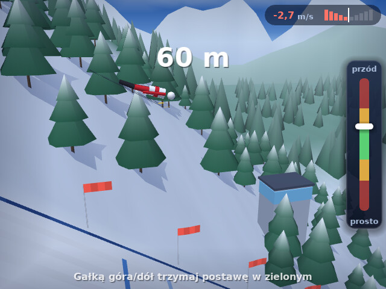
Gałką trzymasz postawę w zielonym. W zawodach linia na zeskoku pokazuje, ile trzeba do lidera.
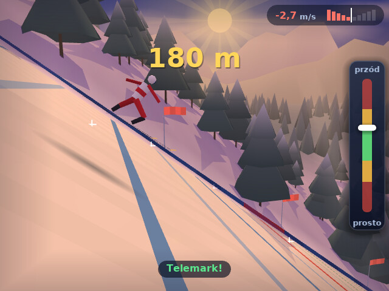
Pierścień robi się zielony – wciskasz B i A razem. Jeden przycisk to pewne lądowanie na dwie nogi.
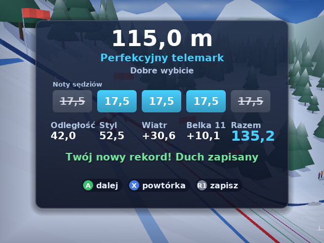
Pięciu sędziów, punkty za odległość, styl, wiatr i belkę. Gra pokaże, za co odjęli.
Mała paczka, a w środku cały sezon: od treningu na Krokwi po loty na mamutach.
Wielka Krokiew, Malinka, Bergisel, Letalnica i inne. Od K85 w Karpaczu do mamutów K200.
Pasek pokaże, czy trafiłeś. Za wcześnie? Gra powie o ile.
Dobre wybicie za wcześnie o 0,03 s
Wchodzą po kolei. Najwyższa i najniższa skreślone. Najlepsi stają na podium.
Pierwszy skok krok po kroku. Gra staje w odpowiedniej chwili i mówi, co wcisnąć. Przy pierwszym uruchomieniu menu zaczyna właśnie od niego.
W zawodach linia na zeskoku pokazuje, ile trzeba do prowadzenia. Miniesz ją – metry robią się żółte.
Przy notach żółty napis mówi, co kosztowało punkty: wybicie, lot czy lądowanie.
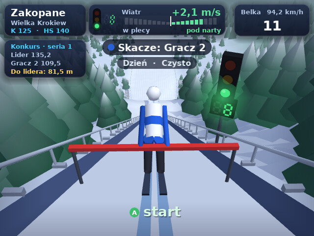
Do 4 osób na jednej konsoli. Każdy wpisuje swoje imię i skacze po kolei – jak w prawdziwym konkursie.
Wiatr żyje przez cały skok, a skala pokazuje, czy wieje pod narty, czy w plecy. W zawodach jury przesuwa belkę.
W konkursie drużynowym wybierasz jeden z 14 krajów. Na liście widać flagę i skład, a Ty zastępujesz najsłabszego skoczka.
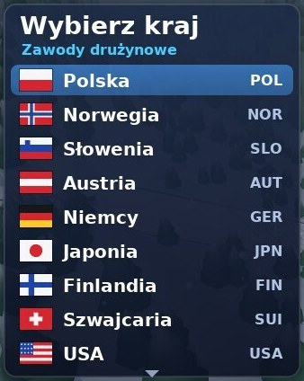
Zwolnione tempo zaraz po skoku. R1 zapisuje najlepsze na później.
Zmyślona czołówka świata. Ty wybierasz, jak mocno mają skakać.
Trzy pory dnia i 8 rodzajów pogody: mgła, chmury, śnieg, zawieja. Bywa też zorza polarna.
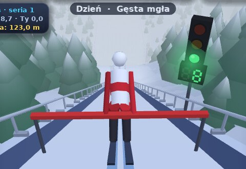
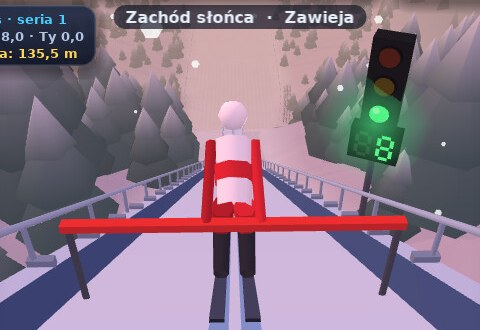
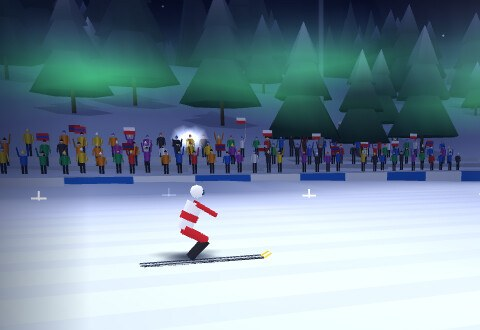
Wieczorem skocznię oświetlają lampy, drzewa i tor rzucają cienie, a w locie widać góry i chmury.
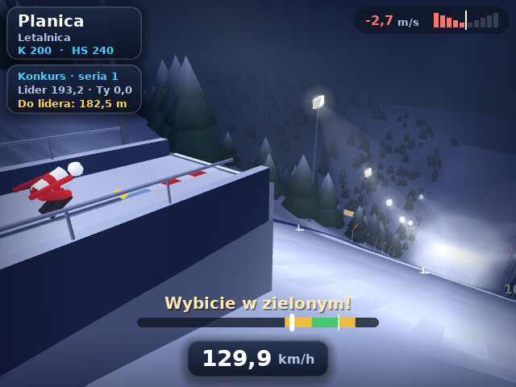
Rekord skoczni i Twój najlepszy skok na każdej z 27.
Codziennie inna skocznia i wspólny ranking online. Skaczesz obok ducha lidera, a punkty liczy serwer, więc ranking jest uczciwy.
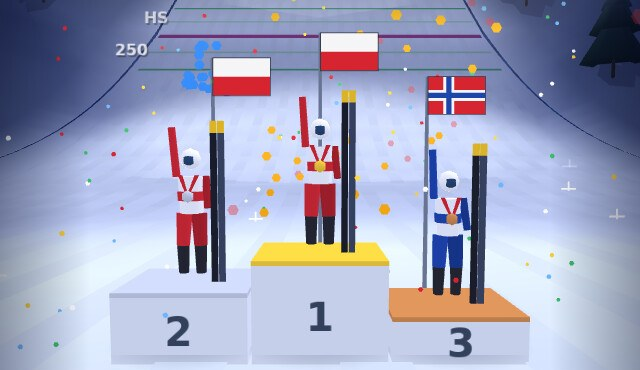
Skończysz w pierwszej trójce? Stajesz na podium: medale, flagi i konfetti, a pasek na dole ogłasza miejsca jak w telewizji.
Bateria padła w trakcie zapisu? Kariera, rekordy i powtórki i tak zostają.
Karta Wersja w menu sprawdza, czy jest coś nowego, i pobiera to przez Wi-Fi.
Własna muzyczka w menu, gong na zielonym i doping z trybun. Flesze na trybunach, a na podium fajerwerki.
Zmiana jednym przyciskiem w menu.
Włączasz w ustawieniach i skaczesz obok swojego najlepszego skoku.
Gra jest zrobiona pod pada R36S. Bez myszki, bez klawiatury.
Wskaż wiersz, a konsolka pokaże przycisk
B działa jak A, a Y jak X.
Jeden plik zip, wgrywasz na kartę i grasz. Za darmo.
Sprawdzone na R36S z ArkOS i dArkOS. Kolejne wersje pobierzesz już w grze, z karty Wersja w menu. Wszystkie wersje
Orli Lot.sh i folder orlilot.ports na karcie z grami.